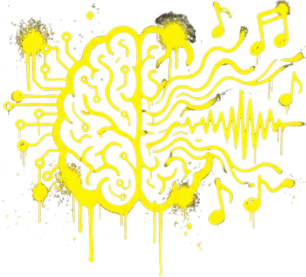

¿Cómo es el proceso de creación?

Para comprender cómo se genera una canción con inteligencia artificial, retomamos investigaciones académicas que estudian los modelos generativos de audio y su capacidad para producir música a partir de instrucciones humanas.
¡Presiona el botón OK en tu teclado para continuar!